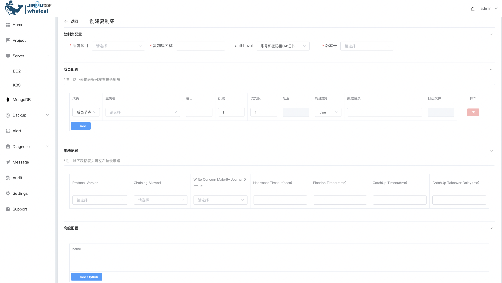

Create ReplicaSet
Create ReplicaSet 分为以下两部分操作内容：
- Prerequisites
- Procedure
MongoDB ReplicaSet 是一组MongoDB实例的集合，其中包括一个主节点和多个从节点。主节点处理写入操作，并将数据复制到从节点，从而提供数据冗余和高可用性。如果主节点不可用，系统会自动选择新的主节点，确保系统的持续运行和故障恢复。ReplicaSet 部署方式提供高可用机制。推荐生产中使用。
使用 WAP 可以创建 ReplicaSet ，可以添加 ReplicaSet 节点，升降级。
Prerequisites
在部署 ReplicaSet 前必须确保 Host 已被 WAP 管理。若没有，请先添加EC2或添加K8S。
在部署 ReplicaSet 前必须确保 WAP 中有可使用的 MongoTar。若没有，请先上传 MongoTar。
Procedure
1、进入导航目录
a. 点击 MongoDB 选项按钮
b. 选择 MongoList 选项，页面展示所有用户可操作 MongoDB Cluster

2、创建 ReplicaSet
a. 点击右侧 创建项目 按钮
b. 选择 复制集 选项
3、配置 ReplicaSet

复制集配置
| 配置项 | 值 |
|---|---|
| 所属项目 | 选择所属项目的名称 |
| 复制集名称 | ReplicaSet 配置中 replSetName |
| 是否开启认证 | 未开启任何认证: 不设置用户密码 账号和密码: 开启认证并设置用户密码 账号和密码且CA证书: 开启认证设置用户密码并使用CA证书 |
| 版本号 | 选择创建 mongodb 版本所对应 MongoTar |
成员配置
| 配置项 | 值 |
|---|---|
| 成员 | 复制集成员类型： 成员节点：复制集中承载数据的节点，具有投票权，可以被选举为主节点 隐藏节点：复制集中承载数据的节点，具有投票权，复制集配置参数为 hidden 隐藏延迟节点：复制集中承载数据的节点，具有投票权，复制集配置参数为 slaveDelay and hidden |
| 主机名 | 选择部署 ReplicaSet 节点 所在主机 |
| 端口 | 节点所使用端口 |
| 投票 | 复制集选举期间的投票数 |
| 优先级 | 复制集选举期间的优先级，优先级为0，则节点不能被选举为主节点 |
| 延迟 | 节点落后于主节点的时间（单位：秒），仅用于成员为 隐藏延迟节点 |
| 构建索引 | true：MongoDB构建索引 false：MongoDB不构建索引 |
| 数据目录 | ReplicaSet 数据文件存储目录（绝对路径） |
| 日志文件 | ReplicaSet 日志输出文件 |
| Add | 添加新成员 |
集群配置
| 配置项 | 值 |
|---|---|
| Protocol Version | 复制集所用复制协议版本 |
| Chaining Allowed | true：允许从 secondary 节点复制数据 false：不允许从 secondary 节点复制数据 |
| Write Concern Majority Journal Default | 是否写入多数节点后返回 |
| Heartbeat Timeout(secs) | 成员节点间心跳检测时间 |
| Election Timeout(ms) | 成员节点与主节点不可达时，检查时间 |
| CatchUp Timeout(ms) | 新选举出的主节点与最近的写操作的追赶时间 |
| CatchUp Takeover Delay(ms) | 成员节点领先主节点后，等待主节点时间 |
高级配置

a. 点击 Add Option 按钮
b. 选择添加启动配置项，点击 确定 按钮添加
c. 设置 配置选项 值
4、创建
点击 创建 按钮，创建 ReplicaSet。